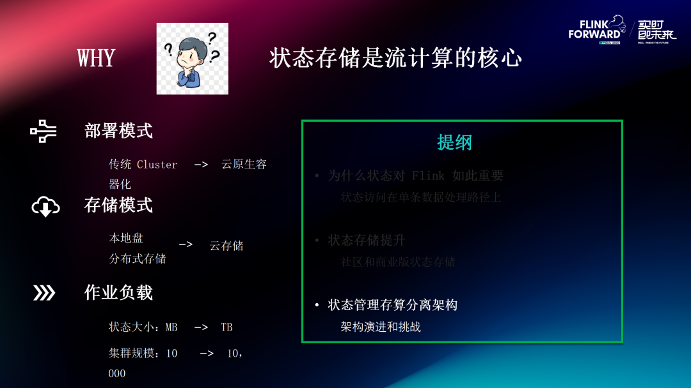

存算分离｜Flink2.0状态存储演进和优化
转自公众号：Apache Flink
http://mp.weixin.qq.com/s?__biz=MzU3Mzg4OTMyNQ==&mid=2247509649&idx=1&sn=7dea71f8e53e724fc286105482cfb4c8
引言
我们在这个时间点重新聊状态存储这个话题是因为状态存储是流计算的核心。Flink 从 2017 年 VLDB 发表奠基之作介绍状态存储[1] 发展至今，Flink 在状态这部分的架构基本并没有太大的变化。但时代是在不断演进和变化的，无论部署模式、存储模式，还是作业负载，都已经发生了翻天覆地的变化。
从部署模式看，我们经历了 map-reduce 时代 Cluster 上没有资源隔离的部署，到云原生时代 K8S 容器为粒度隔离部署。
与此同时，硬件的提升也带来的存储模式的变化，最显著的是网络带宽从 10 年前几百 Mbps，到现在 25Gbps 起步，基本上可以和本地 SSD 的宽度比肩，且内网传输的话速度快、成本低，这使得存储模式从本地存储，到分布式存储，再向云存储的转变。云存储虽然延迟高，但具有容量大、成本低的优势，非常契合现在降本增效的大背景。
另外作业负载方面也发生了很大变化，Flink 刚诞生时，几百 MB 的状态就算大状态场景了，而现在物流等一些场景下，几百 TB 的状态也是很常见的。技术的进步、用户需求的变化带给我们对状态存储这个部分的一些新的思考，这就有了本文要探讨的话题。
本文内容主要分为三个方面探讨一下 Flink 存算分离架构的演进方向。
第一部分，先讲为什么状态对 Flink 的重要性，因为状态访问在单条数据处理路径上，处理延迟对整体性能影响很大；
第二部分，会讲一讲近期状态存储这个部分社区以及我们在阿里内部所做的一些工作和探索；
第三部分，聊一聊基于这些探索工作，Flink 存算分离架构应该是什么样的。
为什么状态对 Flink 如此重要
2.1 状态的角色
在 Flink 流处理中，如果后续计算需要依赖前面输入的时候，需要用状态表（State Table）来保存中间数据。在 Task Manager 中，通过一个称为 StateBackend 的服务组件为算子层提供状态读写服务。如果状态太大，内存无法承载时，StateBackend 会把状态数据以文件的形式组织并存储在本地磁盘上。但是通常本地盘不具备数据可靠性，所以 Flink 需要对状态进行定期的快照，把本地文件上传到分布式文件系统（OSS/HDFS/S3 等）。另外，一个 Flink 作业中往往有多个Task 包含有状态算子，因此 Flink 需要确保这些不同的 Task 上的状态快照是全局一致的，也就是说是对齐输入的，这个过程就是 Flink Checkpointing 过程。
2.2 Flink状态管理的需求以及现存的问题
这一部分我们主要探讨一下目前 Flink 状态存储的需求以及现存的问题，有了这个前提我们才能“对症下药”。
首先，状态处理是流计算的关键路径。目前 Flink State 接口都是单线程、单 KV 访问模式的，因此 State 读写的延迟会极大地影响 Flink 作业的处理性能（TPS）。而大多数 Flink 线上作业都会挂载本地盘，其访问延迟基本在 us 级别。如果将状态本地存储直接替换成 DFS 存储后，访问延迟部分会遇到很大的瓶颈，这也是之前很多人尝试 Flink 远端状态存储遇到性能问题的原因。另外，对状态做快照的过程也需要尽量轻量稳定，不能影响正常的数据处理。
在云原生的大背景下，对状态提出了更高的要求。
首先是本地盘大小的限制。容器化技术可以做到很好的资源隔离，这也就意味着资源需要预分配。在 Flink 场景中，作业在启动时 Task Manager 本地盘大小就已经固定了；在作业运行期间进行磁盘重新挂载（remount）又十分麻烦，一般各大云厂商的全托管服务也不支持这种高级功能。因此，如果在作业运行期间本地磁盘满了，通常只能通过扩并发解决。但对于公有云用户来说，往往是不太愿意因为状态写满磁盘去多付费的。
除了本地盘资源，对于其他资源（比如 CPU 和 Network IO 等）也是一样的，容器化架构希望这些资源使用可以尽量平滑，避免出现尖峰，才能更好地实现资源隔离。最后是高效的弹性伸缩（Elasticity），社区现在结合 K8S Operator 可以做到原地 rescale, 以及利用 1.19 将要做的 Local Rescale 可以部分解决弹性伸缩的问题，但是状态稍微大点之后还是会有状态下载慢的问题。
此外还有一些用户视角来讲的需求，比如说状态可查询和状态可复用。关于状态可查询，社区经常有用户询问 Queryable State， 但 Queryable State 其自身架构存在缺陷，开启时会影响 Task Manager 正常的数据处理，目前在社区已经处于 Deprecate 状态。我们后续在存算分离架构设计的时候也是需要全面考虑这类需求的。
状态存储提升 —— 社区和商业版状态存储
基于上述的这些需求和挑战，我们接下来看一下，在社区和我们的商业版本里面，围绕状态存储优化我们都做了哪些尝试以及还存在什么问题。
3.1 分布式快照架构升级
分布式快照这个部分，从 Flink 1.11 版本开始，历经社区 6 个版本，我们在 Checkpoint 的稳定性和完成速度方面做了一些工作，主要包含三个功能：动态调节缓存数据（Buffer Debloating）、非对齐快照（Unaligned Checkpoint）、通用增量 checkpoint。这三个功能在各大公司都有大规模实际落地，发挥其应有的价值。

Unaligned Checkpoint 和 Buffer Debloating 主要是为了防止或者减少反压时 Checkpoint Barrier 被算子间管道中数据阻塞的情况发生。从实验结果来看 Unaligned Checkpoint 在反压的时能把快照完成时间缩短 90%（这个前提是 state size 不能太大，barrier 对齐时间是主要因素）。另外，因为 Unaligned Checkpoint 存储了算子管道中的数据，所以我们也测试了其对全量 Checkpoint 大小和状态恢复时间的影响，测试结果显示全量 Checkpoint 大小的增加和状态恢复的额外时间基本上可以忽略不计。
当作业状态比较大的时候，状态上传时间就会成为 Checkpoint 完成耗时的主导因素，这时我们可以用通用增量快照来加速 Checkpoint。通用增量快照解耦了 Checkpointing 过程和状态快照过程，可以把增量的状态 changelog 持续上传到 DFS，使得在做 Checkpoint 时只需要上传很少的数据量，因此可以做到无论状态多大， Checkpoint 基本都可以在 10s 内完成（Nexmark 上所有状态 Query 的测试结果均符合）。
通用增量 Checkpoint 最开始是为加速 Checkpoint 设计的，后来发现还有一些额外的收益，如上图所示，CPU 和网络流量的尖峰使用减少了 70%，这对于整体 Cluster 的稳定性和资源节省都是非常关键的。该优化的原因是原来 Flink 周期性快照会让作业中所有 Rocksdb 状态后端周期性触发 Compaction 和上传文件，导致 Checkpoint 期间消耗大量 CPU 和 Network IO，容易形成 CPU 和 Network IO 尖峰。通用增量快照把 Checkpointing 和状态快照过程解耦后，状态快照触发的时间可以随机化，避免 CPU 和网络使用尖峰的形成。
另外，因为通用增量快照速度很快，在容错时数据回放量可以大大减少，这对于重复数据比较敏感的作业是非常关键的。事物都有两面性，通用增量快照的额外开销是需要双写数据，我们也利用 Nexmark Stateful Query 测试了其对 TPS 的影响，结果显示在网络带宽不是瓶颈的情况下，通用增量快照对压测 TPS 影响小于 5%，详细数据可以参考：通用增量 Checkpoint 性能评测与分析[2] 。
3.2 面向云原生：高效弹性扩缩容
除了 Checkpoint 这个部分，社区从 1.17 开始也在尝试更高效的弹性扩缩容。
首先 Flink 1.18 中 Adaptive Scheduler 支持了 Rest API，K8S auto scaler 可以调用这个 API 进行原地扩缩容，也就是说在更新作业之后 Task Manager 和 Job Manager 不用被重启，可以最大限度的复用现有资源。
其次，对于文件下载这个部分，Flink-1.18 开始支持并行下载，平均耗时减少 30%；在 1.19 预计会支持 Local Rescale，扩缩容的时候可以免除重复下载，配合上述的 K8S 原地扩缩容，这个部分提升应该是会很大的。
最后在状态重建这个方面，Flink 1.18 中恢复状态时禁用 WAL，可以减少恢复时的额外开销；Flink 1.19 之后，状态重建可以支持文件粒度的合并裁剪，重建状态后端耗时减少 50% - 80%。
3.3 Gemini：面向流计算场景的分层状态存储
这一章节分享我们在阿里内部做的关于状态云原生部分的一些探索：Gemini，阿里自研的一款面向流计算场景的分层状态存储。
Gemini 在阿里内部全量上线，服务于不同状态大小的作业（从几百MB到上百TB），也成功度过了 2021 — 2023 双十一的洗礼，取得了非常好的降本增效效果。另外，我们基于 Flink1.15 利用 Nexmark Benchmark，对 Gemini 和 Rocksdb 做了纯状态后端层面的性能对比，从测试结果可以看出 Gemini 对作业性能（单核吞吐能力）提升效果十分显著，平均 50%+。
Gemini 可以看成是一个分层的状态存储，内存数据存放在 Mem Table（读写） 和 Cache（只读）中，热数据被写在 Local Disk，本地盘写满后将部分冷数据写到 DFS 上。抛开 DB 其他功能，我们重点分享一下 Gemini 存算分离方面的探索。首先，云上全托管服务都是有磁盘容量限制的，大部分用户是不愿意为状态把本地盘写满这件事情额外付费去增加并发的，所以 Gemini 实现了本地和远端统一的文件管理，把本地盘作为主存，DFS 作为再下一级存储，在 DFS 上数据量不大的情况下，性能是可以接受的，但是如果频繁访问 DFS，性能还是会有较大的影响。
在快速扩缩容方面，Gemini 主要有两方面优化：文件粒度合并剪裁以及状态文件懒加载。其中，文件粒度合并剪裁和社区现在的做法稍有不同，Gemini 的文件裁剪是异步的，可以让作业更快地恢复；状态文件懒加载是指远端文件异步下载，按需加载，Flink 作业在恢复元数据后, 就可以开始半速运行。从我们的测试结果中可以看到，热更新+状态懒加载可以让作业停止处理的时间从 200s 下降到 20s。
状态管理存算分离架构 —— 架构演进和挑战

在状态管理分层架构下，状态使用的难题目前都有一些解决方案，但是这些方法并不是很完美，我们在实现过程中也遇到了一些困难，在最后一节和大家分享一下我们的经验，以及存算分离架构演进的可能方案。
4.1 云原生架构演进
在 Gemini 的统一文件管理架构中，状态文件会在本地盘满了以后刷到 DFS，但仍然以本地存储作为 Primary Storage。这种形式的弊端是让文件管理比较复杂而且不太好扩展，比如说我们有更多层的存储时需要架构有较大改动。这种形式相对于把本地存储当成 Cache 的情况会更复杂，特别是对于文件写失败等异常情况的处理。其次，以本地 state 为主存的模型中，每个 Task 缺少算子完整状态的 Global View，这会让状态的共享化比较难以实现，对于一些状态特别大且有共享需求的作业来说，实现成本就会成倍增加。更关键的是现在这种模式下，很多 DB 设计都是基于本地存储为主存的前提做的，这让状态 DB Compaction 和冷热分离策略都变得相对复杂，计算节点和存储节点的捆绑实际还是比较紧密的。

为此我们可以考虑换个思路来做这个事情，把 DFS 作为 Primary Storage，而把本地磁盘作为 Cache 并且是不强制需要的（Optional），DFS 的数据是 Source of truth。在这种形式下，状态数据直接持续写入 DFS，内存和本地盘作为 Cache，服务于上层的算子状态访问。这种架构的好处是：
Checkpoint 被触发的时候，大部分状态文件已经在 DFS 上了, Checkpoint 可以速度很快；
状态文件在算子之间是可以共享的，一些场景下通过共享状态计算，存储资源可以大大减少；
状态查询可以基于远端 Checkpoint 文件实现，并提供文件级别 API；
Compaction 和状态清理不再和 Task Manager 绑定，我们可以通过 remote compaction、load balancing 等手段来均衡 Cluster 整体资源的使用。
然而仅仅将状态主存从本地磁盘切换到远端文件系统，就可以完美实现存算分离架构了吗？答案是 No。仅仅如此的话，作业性能会特别差，因为相比于本地状态架构，State 写到远端后访问性能会出现很大回退。
4.2 Flink 现有状态访问线程模型
性能回退的原因是受限于目前的 Flink 线程访问模型，数据处理必须以单线程单条 Record 处理的模式进行，对 State 访问的延迟极其敏感。其中，状态访问以单 KV 为粒度;算子数据处理会封装成 Mail，在 task 线程中顺序执行，因此单 record 的延迟对性能影响很明显。从读写链路上具体分析的话，对状态的写路径是 non-blocking 的，writes 追加写到 writeBuffer 中，writeBuffer 写满后异步刷到磁盘上，所以 write 流程对于整体的 TPS 影响不大。但是读路径是非常影响整体性能的，读数据时如果在 Block Cache 中 Cache miss，需要从磁盘上读取数据，读取过程会阻塞数据处理，影响作业总体的性能。
更近一步，我们可以看到 Task 线程执行一次计算时，时间主要消耗在以下几个部分：
Operator CPU：用于执行算子逻辑；
State CPU：读写 access 以及序列化反序列化等；
State IO：状态读盘的时间。正因为读盘操作是 Blocking IO，而 DFS 的访问延迟相比于本地盘很大很多，所以单线程模型直读 DFS 速度会比本地盘慢很多。

为了解决这个问题，我们可以考虑把 Task 线程的 Blocking IO 改造成 Non-Blocking IO，这样才能更高效地充分利用 CPU 和 IO 资源。在 state 文件多线程并发访问的初步实验中，当我们把 thread pool size 调到足够大的时候，性能有明显的提升（约有 6 倍）。实际上，Non-Blocking IO 架构要考虑的问题肯定要比现在的 state 多线程访问实验要复杂很多，比如说同一个 Key 的执行顺序如何保证等等，我们也做了一些 POC 并得到一些初步结论，敬请期待后续文章分享。
总结
最后是本次分享的一些总结 。
第一是状态访问在流计算中起到了非常关键的作用。在单条 record 的访问路径上，状态访问的处理速度会严重影响到 TPS ，这也是之前很多尝试 Flink 远端状态存储访问会非常慢的原因。
第二，云原生时代对状态存储提出了更高的要求，比如受限的本地盘、快速扩缩容以及平滑的资源使用等等。基于这个，我们做了大量的优化工作，但是还不太足够，因此我们提出 State 的存储访问架构需要进一步的演化。
第三，社区已经推出的 Unaligned checkpoint 和通用增量 checkpoint 这两个功能 ，逐步在各大公司和厂商里广泛的实践和使用，我们内部也进行了小范围的尝试，效果很不错。
第四，介绍了 Gemini，阿里内部的面向流计算的分层状态存储，我们在这个过程中进行了一些云原生以及存算分离模型的探索。
最后分享了 Flink 2.0 存算分离架构的大致构想，我们后续也会在社区发出关于 Flink 2.0 存算分离的讨论，并且更详细的分享我们的设计原因、面临的挑战以及相应的解决方案，敬请期待。